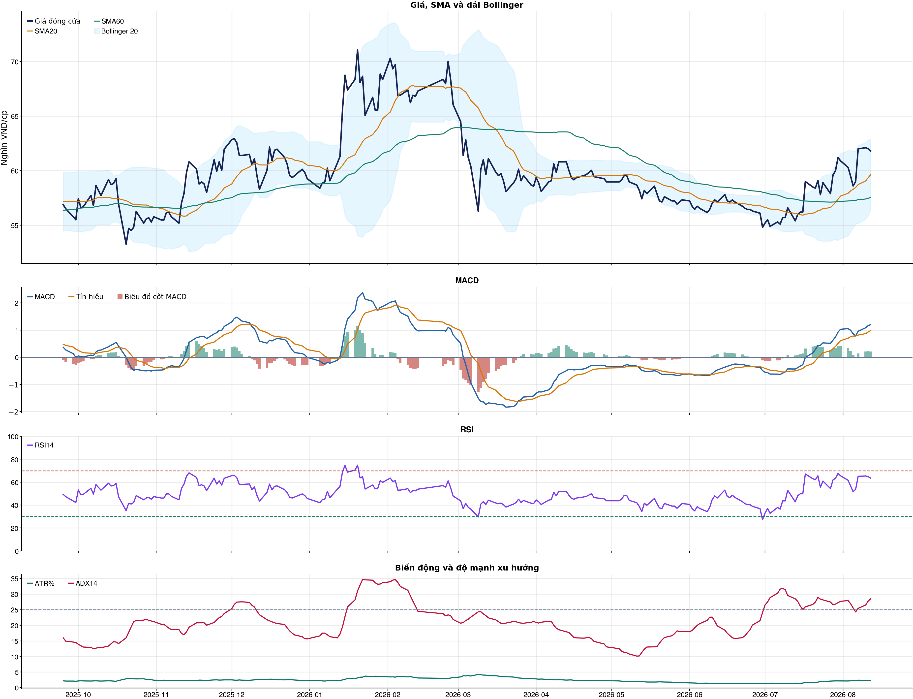
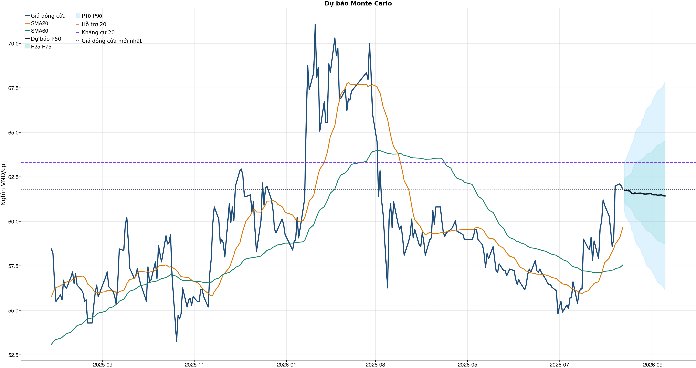
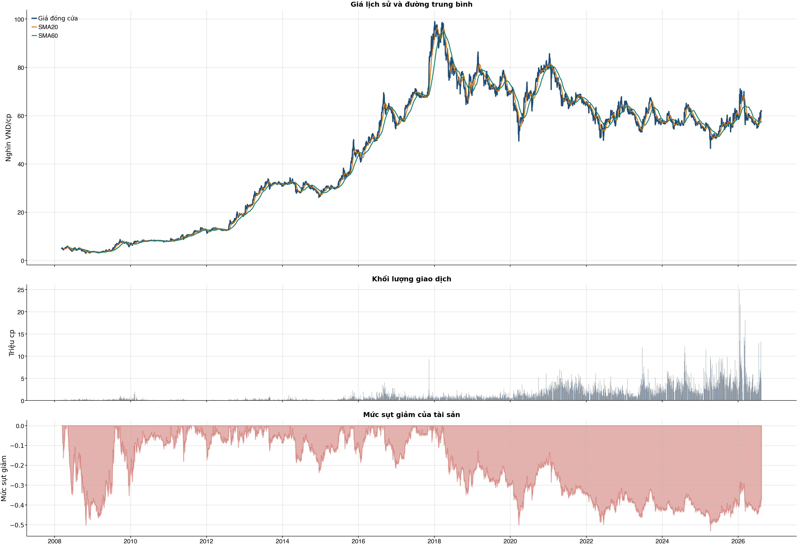

Kết quả chính
Tổng quan cơ bản
Biểu đồ kỹ thuật

Tín hiệu kỹ thuật
| Xu hướng | Tích cực | Giá nằm trên SMA20 và SMA60. |
| MACD | Tích cực | MACD trên signal, histogram dương. |
| RSI14 | Tích cực | RSI 63.5. |
| Bollinger | Ổn định | Giá nằm trong dải Bollinger. |
| ADX | Xu hướng tăng | ADX 28.5, +DI vượt -DI. |
| Thanh khoản | Thấp | 0.49 lần trung bình. |
| Stochastic | Yếu lại | %K nằm dưới %D. |
So sánh mô hình
| XGBoost | 0.503 | AUC 0.526 |
| Logistic | 0.535 | AUC 0.558 |
| Đa số | 0.500 | Mốc so sánh |
Kiểm thử chiến lược ngoài mẫu sau chi phí
| Lợi nhuận ròng | -33.9% | 738 quan sát ngoài mẫu |
| Sharpe | -1.41 | Sau chi phí |
| Mức sụt giảm tối đa | -35.8% | 69 vòng giao dịch |
| Chi phí giả định | 50.0 bps | Một vòng mua và bán |
Mức độ quan trọng của đặc trưng
| close_vs_sma20 | 11.57 | Mức đóng góp |
| relative_strength_20d | 11.12 | Mức đóng góp |
| return_1d | 10.65 | Mức đóng góp |
| return_3d | 10.43 | Mức đóng góp |
| month_of_year | 10.12 | Mức đóng góp |
| volatility_20d | 9.69 | Mức đóng góp |
| return_2d | 9.66 | Mức đóng góp |
| market_return_1d | 9.60 | Mức đóng góp |
Điều kiện phát hành tín hiệu
| AUC của mô hình | KHÔNG ĐẠT | Điều kiện phát hành tín hiệu |
| Độ chính xác cân bằng của mô hình | KHÔNG ĐẠT | Điều kiện phát hành tín hiệu |
| XGBoost vượt mô hình Logistic đối chứng | KHÔNG ĐẠT | Điều kiện phát hành tín hiệu |
| Xác suất tăng đạt ngưỡng | ĐẠT | Điều kiện phát hành tín hiệu |
| Bối cảnh kỹ thuật đạt ngưỡng | ĐẠT | Điều kiện phát hành tín hiệu |
| Tỷ lệ lợi nhuận/rủi ro đạt ngưỡng | ĐẠT | Điều kiện phát hành tín hiệu |
| Dữ liệu còn mới | ĐẠT | Điều kiện phát hành tín hiệu |
| Có khối lượng vị thế hợp lệ | ĐẠT | Điều kiện phát hành tín hiệu |
| Có kết quả kiểm thử chiến lược ngoài mẫu | ĐẠT | Điều kiện phát hành tín hiệu |
| Mẫu kiểm thử chiến lược đủ lớn | ĐẠT | Điều kiện phát hành tín hiệu |
| Kiểm thử chiến lược có lợi thế ròng | KHÔNG ĐẠT | Điều kiện phát hành tín hiệu |
Quản trị rủi ro
| Rủi ro/lệnh | 1.0% | 1,000,000 VND |
| Mức dừng lỗ | 59.65 | Rủi ro mỗi cổ phiếu 2.45 |
| Mục tiêu 1 | 67.83 | Lợi nhuận/rủi ro 2.33 |
| Mục tiêu 2 | 67.83 | Dự báo/kháng cự |
Phân tích cơ bản
| P/E | 11.82 | 2026-Q2 |
| P/B | 4.07 | 2026-Q2 |
| P/S | 1.88 | 2026-Q2 |
| ROE | 33.9% | 2026-Q2 |
| ROA | 19.8% | 2026-Q2 |
| Gross margin | 42.2% | 2026-Q2 |
| Net margin | 15.9% | 2026-Q2 |
| Debt/Equity | 0.61 | 2026-Q2 |
| Current ratio | 1.91 | 2026-Q2 |
| NPL | 0.0% | 2026-Q2 |
| Dividend yield | 0.0% | 2026-Q2 |
| Market cap | 129,577.2 tỷ | 2026-Q2 |
| Revenue Growth | 12.7% | 2026-Q2 YoY |
| Profit Growth | 28.0% | 2026-Q2 YoY |
| Dòng tiền từ HĐKD | 3,204.5 tỷ | 2026-Q2 |
| CAPEX | -326.0 tỷ | 2026-Q2 |
| Lợi nhuận sau thuế | 3,184.4 tỷ | 2026-Q2 |
| Lợi nhuận hoạt động | 3,909.0 tỷ | 2026-Q2 |
| Chi phí lãi vay | -116.1 tỷ | 2026-Q2 |
| Tiền và tương đương tiền | 4,535.7 tỷ | 2026-Q2 |
| Vay ngắn hạn | 8,323.4 tỷ | 2026-Q2 |
| Vay dài hạn | 131.4 tỷ | 2026-Q2 |
| Tổng tài sản | 57,451.8 tỷ | 2026-Q2 |
| Tổng nợ phải trả | 21,785.5 tỷ | 2026-Q2 |
| Vốn chủ sở hữu | 35,666.3 tỷ | 2026-Q2 |
| Khoản phải thu | 5,949.4 tỷ | 2026-Q2 |
| Hàng tồn kho | 7,720.3 tỷ | 2026-Q2 |
| Dòng tiền tự do (CFO - CAPEX) | 2,878.4 tỷ | 2026-Q2 |
| CFO / Lợi nhuận sau thuế | 1.01 | 2026-Q2 |
| Nợ vay ròng | 3,919.2 tỷ | 2026-Q2 |
| Nợ vay / Vốn chủ sở hữu | 0.24 | 2026-Q2 |
| Phải thu / Tổng tài sản | 10.4% | 2026-Q2 |
| Khả năng trả lãi (EBIT / lãi vay) | 33.67 | 2026-Q2 |
Tin tức doanh nghiệp
| Trạng thái | Có dữ liệu | research_only |
| Nguồn / số bài | VCI | 50 |
| Bài đủ timestamp | 50 | Chỉ các bài này mới được phép dùng point-in-time |
| Sentiment 5 ngày | 0.00 | 0.0 bài trước cutoff |
| Phương pháp | keyword_heuristic_v1 | Research only; chưa dùng làm tín hiệu mua/bán |
Dự báo ngắn hạn
| 2026-08-13 | 61.77 | P10 60.59 / P90 63.33 |
| 2026-08-14 | 61.73 | P10 60.26 / P90 63.47 |
| 2026-08-17 | 61.70 | P10 59.89 / P90 64.12 |
| 2026-08-18 | 61.57 | P10 59.48 / P90 64.36 |
| 2026-08-19 | 61.54 | P10 59.43 / P90 64.51 |
| 2026-08-20 | 61.60 | P10 58.98 / P90 64.90 |
| 2026-08-21 | 61.58 | P10 58.73 / P90 65.17 |
| 2026-08-24 | 61.59 | P10 58.42 / P90 65.41 |
Biểu đồ dự báo

Lịch sử giá và mức sụt giảm

Báo cáo dùng để học tập và lập kịch bản, không phải khuyến nghị mua/bán.
Phân tích AI có kiểm chứng
Trạng thái quyết định: NO_EDGE
Tóm tắt: ML decision hiện giữ nguyên NO_EDGE. News Reader đã trích đoạn có nguồn của 4 bài để phân loại chủ đề (ket_qua_kinh_doanh: 3, co_tuc_va_hanh_dong_doanh_nghiep: 3, vi_mo: 3, nganh: 2, rui_ro: 1), nhưng các trích đoạn này không tạo bằng chứng mới cho quyết định đầu tư.
Kỹ thuật: Artifact kỹ thuật: bias Tích cực; điểm 6. Chi tiết artifact: Xu hướng: Tích cực (Giá nằm trên SMA20 và SMA60.); MACD: Tích cực (MACD trên signal, histogram dương.); RSI14: Tích cực (RSI 63.5.); Bollinger: Ổn định (Giá nằm trong dải Bollinger.); ADX: Xu hướng tăng (ADX 28.5, +DI vượt -DI.); Thanh khoản: Thấp (0.49 lần trung bình.); Stochastic: Yếu lại (%K nằm dưới %D.)
Cơ bản: Artifact cơ bản: VINAMILK; kỳ 2026-Q2; P/E 11.82; P/B 4.07; ROE 33.9%; ROA 19.8%; Debt/Equity 0.61; Revenue Growth 12.7%; Profit Growth 28.0%.
Tin tức: Đã đọc trích đoạn giới hạn của 4 bài; phân nhóm rule-based: ket_qua_kinh_doanh: 3, co_tuc_va_hanh_dong_doanh_nghiep: 3, vi_mo: 3, nganh: 2, rui_ro: 1. Tác động cần kiểm chứng: Đối chiếu doanh thu/lợi nhuận trong bài với BCTC và kỳ vọng thị trường. Kiểm tra ngày GDKHQ, tỷ lệ, nguồn chi trả và nguy cơ pha loãng trước khi đánh giá tác động. Đối chiếu thời điểm công bố và kênh tác động lãi suất/tỷ giá với mô hình kinh doanh. So sánh tín hiệu ngành với thị phần, nhu cầu và đối thủ trước khi suy luận cho riêng doanh nghiệp. Xác minh công bố chính thức, phạm vi ảnh hưởng và khả năng định lượng rủi ro. Đây không phải sentiment hay dự báo tác động giá.
Live research: Live snapshot lấy lúc 2026-08-12T15:39:22.377405+00:00; News Reader đọc được 4 bài. ML có 4 lý do guard và vẫn là NO_EDGE. Không dùng tin live để train/backtest.
Rủi ro cần kiểm chứng
- ML guard: AUC 0.526 < 0.540
- ML guard: Balanced accuracy 0.503 < 0.520
- ML guard: XGBoost chưa vượt logistic baseline: AUC XGBoost=0.5261655414807923, AUC logistic=0.55789339758423
- ML guard: Lợi thế OOS ròng không đạt: return=-0.3386612699999999, Sharpe=-1.405609731775067
- News Reader: Đối chiếu doanh thu/lợi nhuận trong bài với BCTC và kỳ vọng thị trường.
- News Reader: Kiểm tra ngày GDKHQ, tỷ lệ, nguồn chi trả và nguy cơ pha loãng trước khi đánh giá tác động.
- News Reader: Đối chiếu thời điểm công bố và kênh tác động lãi suất/tỷ giá với mô hình kinh doanh.
- News Reader: So sánh tín hiệu ngành với thị phần, nhu cầu và đối thủ trước khi suy luận cho riêng doanh nghiệp.
- News Reader: Xác minh công bố chính thức, phạm vi ảnh hưởng và khả năng định lượng rủi ro.
- Chỉ lưu trích đoạn giới hạn để kiểm chứng nguồn; không lưu hay hiển thị toàn văn bài báo.
- Phân nhóm là keyword rule-based để định tuyến research, không phải sentiment hay dự báo tác động giá.
- Dữ liệu News Reader chỉ phục vụ research/report; không dùng làm feature train/backtest khi chưa có lịch sử available_at point-in-time.
- Tin live/trích đoạn cần mở URL gốc để kiểm chứng bối cảnh, số liệu và thời điểm trước khi sử dụng.
Bằng chứng
- ML decision artifact: NO_EDGE. AUC 0.526 < 0.540
- ML decision artifact: NO_EDGE. Balanced accuracy 0.503 < 0.520
- ML decision artifact: NO_EDGE. XGBoost chưa vượt logistic baseline: AUC XGBoost=0.5261655414807923, AUC logistic=0.55789339758423
- ML decision artifact: NO_EDGE. Lợi thế OOS ròng không đạt: return=-0.3386612699999999, Sharpe=-1.405609731775067
- News Reader [VietstockFinance]: VNM: Khuyến nghị MUA với giá mục tiêu 79,600 đồng/cổ phiếu - VietstockFinance | nhóm: ket_qua_kinh_doanh, co_tuc_va_hanh_dong_doanh_nghiep, vi_mo, nganh (2026-08-12T05:45:50+00:00)
- News Reader [Tin nhanh chứng khoán]: Sự kiện chứng khoán đáng chú ý ngày 13/8 - Tin nhanh chứng khoán | nhóm: ket_qua_kinh_doanh, co_tuc_va_hanh_dong_doanh_nghiep, vi_mo (2026-08-12T10:52:41+00:00)
- News Reader [thuonghieucongluan.com.vn]: Cổ phiếu đáng chú ý ngày 12/8: TNG, DGW, KBC và VNM có gì đáng kỳ vọng? - thuonghieucongluan.com.vn | nhóm: ket_qua_kinh_doanh, co_tuc_va_hanh_dong_doanh_nghiep, vi_mo, nganh, rui_ro (2026-08-11T23:21:00+00:00)
- News Reader [Vietstock]: VNM: Báo cáo kết quả giao dịch cổ phiếu của tổ chức có liên quan đến người nội bộ Công ty TNHH MTV Đầu tư SCIC - Vietstock | nhóm: khác (2026-08-12T10:25:33+00:00)
Báo cáo chỉ tổng hợp artifact đã lưu để nghiên cứu; không phải khuyến nghị mua/bán. Quyết định và vị thế vẫn bị khóa theo signal_decision.json.
Tin web đã lấy
| Nguồn | Tiêu đề | Thời điểm | Link |
|---|---|---|---|
| VietstockFinance | VNM: Khuyến nghị MUA với giá mục tiêu 79,600 đồng/cổ phiếu - VietstockFinance | 2026-08-12T05:45:50+00:00 | Mở nguồn |
| Tin nhanh chứng khoán | Sự kiện chứng khoán đáng chú ý ngày 13/8 - Tin nhanh chứng khoán | 2026-08-12T10:52:41+00:00 | Mở nguồn |
| thuonghieucongluan.com.vn | Cổ phiếu đáng chú ý ngày 12/8: TNG, DGW, KBC và VNM có gì đáng kỳ vọng? - thuonghieucongluan.com.vn | 2026-08-11T23:21:00+00:00 | Mở nguồn |
| cafef.vn | Cổ phiếu Vinamilk có 'biến' - cafef.vn | 2026-08-07T04:05:00+00:00 | Mở nguồn |
| Vietstock | VNM: Báo cáo kết quả giao dịch cổ phiếu của tổ chức có liên quan đến người nội bộ Công ty TNHH MTV Đầu tư SCIC - Vietstock | 2026-08-12T10:25:33+00:00 | Mở nguồn |
| VietstockFinance | VNM: Khuyến nghị MUA với giá mục tiêu 73,500 đồng/cổ phiếu - VietstockFinance | 2026-08-06T11:10:52+00:00 | Mở nguồn |
| VietstockFinance | VNM: Khuyến nghị MUA với giá mục tiêu 86,800 đồng/cổ phiếu - VietstockFinance | 2026-08-06T18:16:17+00:00 | Mở nguồn |
| VietnamBiz | Cổ phiếu doanh nghiệp Nhà nước đồng loạt hút tiền, VNM, BCM, GAS và GVR tăng trần - VietnamBiz | 2026-08-07T03:52:00+00:00 | Mở nguồn |
| nguoiquansat.vn | Cổ phiếu đáng chú ý ngày 6/8: MSB, VNM, VPB, - nguoiquansat.vn | 2026-08-05T16:30:01+00:00 | Mở nguồn |
| index.vn | Cổ phiếu 12/8: TNG, DGW, KBC, VNM được khuyến nghị, kỳ vọng tăng giá tới 22% - index.vn | 2026-08-12T01:37:00+00:00 | Mở nguồn |
News Reader: bài đã đọc và trích đoạn
| Nguồn | Tiêu đề | Nhóm | Thời điểm | Trích đoạn đã đọc | Link |
|---|---|---|---|---|---|
| VietstockFinance | VNM: Khuyến nghị MUA với giá mục tiêu 79,600 đồng/cổ phiếu - VietstockFinance | ket_qua_kinh_doanh, co_tuc_va_hanh_dong_doanh_nghiep, vi_mo, nganh | 2026-08-12T05:45:50+00:00 | Xem trích đoạnThứ Tư, 12/08/2026 Vietstock ( VN | EN ) Đấu trường chứng khoán Diễn đàn IR Awards Dịch vụ Vietstock ( VN | EN ) Đấu trường chứng khoán Diễn đàn IR Awards Dịch vụ Đấu trường chứng khoán Diễn đàn IR Awards Dịch vụ Vĩ mô Dữ liệu Cập nhật chỉ số vĩ mô mới nhất 1. Tài khoản quốc gia (GDP) Tổng sản phẩm trong nước (GDP) 2. Chỉ số giá và lạm phát Chỉ số giá và lạm phát cơ bản 3. Thị trường lao động và việc làm Chi tiết Thị trường lao động và việc làm 4. Thị trường bán lẻ Thị trường bán lẻ hàng hóa và dịch vụ 5. Sản xuất công nghiệp Chi tiết sản xuất toàn ngành công nghiệp 6. Bất động sản và xây dựng Chi tiết Bất động sản và Xây dựng 7. Cán cân thanh toán quốc tế Tổng hợp giao dịch kinh tế quốc tế 8. Chính sách tài khóa và tài chính quốc gia Chi tiết quản lý thu, chi ngân sách và nợ công, điều tiết kinh tế 9. Chính sách tiền tệ Chính sách tiền tệ: điều tiết cung tiền, lãi suất, ổn định giá 10. Đầu tư trực tiếp nước ngoài (FDI) Vốn nước ngoài vào sản xuất, kinh doanh nội địa 11. Xuất nhập khẩu theo quốc gia và hàng hóa Chi tiết xuất nhập khẩu theo quốc gia và hàng hóa cụ thể Báo cáo phân tích Báo cáo phân tích vĩ mô mới nhất Thuật ngữ Các thuật ngữ vĩ mô Tin tức Tin tức thị trường vĩ mô mới nhất Ngành Dữ liệu ngành Tổng quan ngành Ngành chi tiết Thông tin chi tiết một ngành Năng lượng Chi tiết ngành Năng lượng Nguyên vật liệu Chi tiết ngành Nguyên vật liệu Công nghiệp Chi tiết ngành Công nghiệp Tiêu dùng không thiết yếu Chi tiết ngành Tiêu dùng không thiết yếu Tiêu dùng thiết yếu Chi tiết ngành Tiêu dùng thiết yếu Chăm sóc sức khỏe Chi tiết ngành Chăm sóc sức khỏe Tài chính Chi tiết ngành Tài chính Công nghệ thông tin Chi tiết ngành Công nghệ thông tin Dịch vụ truyền thông Chi tiết ngành Dịch vụ truyền thông Tiện ích Chi tiết ngành Tiện ích Bất động sản Chi tiết ngành Bất động sản Doanh nghiệp Doanh nghiệp A-Z Danh sách doanh nghiệp đầy đủ Công ty phi tài chính Danh sách doanh nghiệp phi tài chính Ngân hàng Danh sách ngân hàng Công ty chứng khoán Danh sách công ty chứng khoán Công ty bảo hiểm Danh sách công ty bảo hiểm Công ty quản lý quỹ Danh sách công ty quản lý quỹ Công ty kiểm toán Danh sách công ty kiểm toán Hồ sơ lãnh đạo Hồ sơ lãnh đạo doanh nghiệp và người có liên quan Lịch sự kiện Sự kiện doanh nghiệp Niêm yết Sự kiện niêm yết cổ phiếu Cổ tức và phát hành thêm Sự kiện doanh nghiệp trả cổ tức và phát hành thêm Đại hội đồng cổ đông Sự kiện đại hội cổ | Mở nguồn |
| Tin nhanh chứng khoán | Sự kiện chứng khoán đáng chú ý ngày 13/8 - Tin nhanh chứng khoán | ket_qua_kinh_doanh, co_tuc_va_hanh_dong_doanh_nghiep, vi_mo | 2026-08-12T10:52:41+00:00 | Xem trích đoạn* BID: Ngân hàng TMCP Đầu tư Phát triển Việt Nam – BIDV (BID – HOSE) thông báo phát hành hơn 498,1 triệu cổ phiếu tăng vốn từ nguồn vốn chủ sở hữu theo tỷ lệ 100:6,8433. Ngày đăng ký cuối cùng chốt danh sách cổ đông nhận cổ phiếu vào 18/8/2026. * NSC: Ngày 24/8 là ngày giao dịch không hưởng quyền nhận cổ tức đợt 1 năm 2025 của CTCP Tập đoàn Giống cây trồng Trung ương (NSC – HOSE), ngày đăng ký cuối cùng là 25/8. Theo đó, cổ tức sẽ được trả bằng tiền mặt theo tỷ lệ 20%, thanh toán bắt đầu từ ngày 09/9/2026. * ANV: Ông Doãn Chí Thiên, con của ông Doãn Tới - Tổng giám đốc CTCP Nam Việt (ANV – HOSE) đã mua vào 1 triệu cổ phiếu ANV từ ngày 28/7 đến 11/8 theo phương thức khớp lệnh. Sau giao dịch, ông Thiên đã nâng sở hữu tại ANV lên hơn 3,14 triệu cổ phiếu, tỷ lệ 1,18%. * ACL: Ông Nguyễn Xuân Hải, cổ đông của CTCP Xuất nhập khẩu thủy sản Cửu Long An Giang (ACL – HOSE) đã bán ra 750.000 cổ phiếu ACL từ ngày 06/8 đến 11/8 theo phương thức thỏa thuận và khớp lệnh. Sau giao dịch, ông Hải đã giảm sở hữu tại ACL xuống còn hơn 291.000 cổ phiếu, tỷ lệ 0,58%. Liên quan đến ACL, bà Nguyễn Thương Khánh Vy – cá nhân có liên quan đến ông Nguyễn Xuân Hải đã mua vào 1 triệu cổ phiếu ACL, tỷ lệ 1,99% từ ngày 04/8 đến 11/8. * RAL: Ngày 18/8 là ngày giao dịch không hưởng quyền tạm ứng cổ tức đợt 1 năm 2026 của CTCP Bóng đèn phích nước Rạng Đông (RAL – HOSE), ngày đăng ký cuối cùng là 19/8. Theo đó, cổ tức sẽ được trả bằng tiền mặt theo tỷ lệ 25%, thanh toán bắt đầu từ ngày 10/9/2026. * VNM: Công ty TNHH MTV Đầu tư SCIC, tổ chức đầu tư CTCP Sữa Việt Nam – Vinamilk (VNM – HOSE) đã mua vào 150.000 cổ phiếu VNM từ ngày 14/7 đến 12/8 theo phương thức khớp lệnh. Qua đó, nâng sở hữu tại VNM lên 750.000 cổ phiếu. * MZG: CTCP Miza (MZG – HOSE) thông qua phương án phát hành 30 triệu cổ phiếu chào bán cho cổ đông theo tỷ lệ 4,272:1, với giá chào bán 10.000 đồng/cổ phiếu. Thời gian thực hiện dự kiến trong năm 2026-2027. * NAF: Ông Nguyễn Phi Bằng, Giám đốc tài chính CTCP NAFoods Group (NAF – HOSE) đã mua bất thành 400.000 cổ phiếu NAF đăng ký mua từ ngày 08/7 đến 06/8 theo phương thức thỏa thuận và khớp lệnh. Như vậy hiện tại ông Bằng vẫn chưa nắm giữ bất kỳ cổ phiếu NAF nào. * SBG: CTCP Tập đoàn Cơ khí Công nghệ cao Siba (SBG – HOSE) thông qua phương án phát hành 2 triệu cổ phiếu ESOP. Trong đó, 1 triệu cổ phiếu thưởng từ nguồn lợi nhuận chưa phân phối theo Báo cáo tài chính kiểm toán năm | Mở nguồn |
| thuonghieucongluan.com.vn | Cổ phiếu đáng chú ý ngày 12/8: TNG, DGW, KBC và VNM có gì đáng kỳ vọng? - thuonghieucongluan.com.vn | ket_qua_kinh_doanh, co_tuc_va_hanh_dong_doanh_nghiep, vi_mo, nganh, rui_ro | 2026-08-11T23:21:00+00:00 | Xem trích đoạnCỡ chữ A − Cỡ chữ nhỏ A Cỡ chữ vừa A + Cỡ chữ lớn 06:21 12/08/2026 Thương hiệu Tài chính - Chứng khoán Với TNG, điểm đáng quan tâm nằm ở khả năng duy trì đà phục hồi biên lợi nhuận sau giai đoạn chịu nhiều sức ép trong quý I. BSC cho biết kết quả kinh doanh 6 tháng đầu năm 2026 đang bám khá sát dự phóng, với doanh thu thuần và lợi nhuận sau thuế thuộc cổ đông thiểu số hoàn thành lần lượt 53% và 48% kế hoạch năm. Điều này cho thấy hoạt động kinh doanh của doanh nghiệp dệt may đang đi đúng hướng. Tuy nhiên, dư địa tăng trưởng trong những tháng cuối năm vẫn chịu sức ép từ chi phí. Chi phí lãi vay 6 tháng tăng 21%, lên 159 tỷ đồng, trong khi giá nhân công và nguyên vật liệu chưa thực sự hạ nhiệt. Một yếu tố khác cần theo dõi là chính sách thuế đối với hàng hóa Việt Nam. Theo BSC, Việt Nam hiện chịu mức thuế 12,5% theo Section 301 liên quan đến lao động cưỡng bức, cao hơn 2,5 điểm phần trăm so với một số đối thủ dệt may chủ chốt. Vì vậy, triển vọng đơn hàng và biên lợi nhuận sẽ tiếp tục là những biến số quan trọng đối với TNG. BSC hiện đưa ra khuyến nghị mua TNG với giá mục tiêu 21.500 đồng/cổ phiếu. Trong khi đó, DGW đang được chú ý nhờ câu chuyện tăng trưởng lợi nhuận và mặt bằng định giá tương đối thấp. BSC cho rằng cổ phiếu đang được giao dịch với P/E dự phóng năm 2026 khoảng 10,4 lần, thấp hơn đáng kể so với mức định giá trung bình trong giai đoạn trước. Điểm đáng chú ý là lợi nhuận DGW được kỳ vọng tăng mạnh trong năm nay. BSC dự phóng doanh thu thuần đạt 33.789 tỷ đồng, tăng 26,9%, trong khi lợi nhuận sau thuế đạt 860 tỷ đồng, tăng 57%. Động lực chính đến từ mảng laptop và thiết bị văn phòng, đặc biệt là nhóm khách hàng doanh nghiệp. Bên cạnh đó, tình trạng thiếu hụt RAM và chip nhớ đang đẩy giá thiết bị điện tử lên cao, qua đó hỗ trợ biên lợi nhuận của doanh nghiệp phân phối. Nếu xu hướng này kéo dài, DGW có thể tiếp tục duy trì mặt bằng lợi nhuận cao hơn trong năm 2027. Ngoài triển vọng kinh doanh, cổ phiếu còn có các yếu tố hỗ trợ như khả năng chi trả cổ tức bằng tiền và hoạt động mua vào của cổ đông lớn. BSC khuyến nghị mua DGW với giá mục tiêu 48.600 đồng/cổ phiếu. Kỳ vọng phục hồi và định giá hấp dẫn Câu chuyện của KBC lại tập trung vào khả năng cải thiện lợi nhuận trong nửa cuối năm. Kết quả kinh doanh 6 tháng đầu năm chịu ảnh hưởng bởi diện tích đất khu công nghiệp bàn giao thấp. Tuy nhiên, Agriseco kỳ vọng tình hình sẽ thay đổi khi tiến độ bàn | Mở nguồn |
| Vietstock | VNM: Báo cáo kết quả giao dịch cổ phiếu của tổ chức có liên quan đến người nội bộ Công ty TNHH MTV Đầu tư SCIC - Vietstock | khác | 2026-08-12T10:25:33+00:00 | Xem trích đoạnVNM: Báo cáo kết quả giao dịch cổ phiếu của tổ chức có liên quan đến người nội bộ Công ty TNHH MTV Đầu tư SCIC Công ty TNHH MTV Đầu tư SCIC báo cáo kết quả giao dịch cổ phiếu của tổ chức có liên quan đến người nội bộ Công ty Cổ phần Sữa Việt Nam như sau: Tài liệu đính kèm: 20260812 - VNM - Bao cao KQ giao dich CP cua to chuc CLQ voi NNB-SIC (ban CBTT).pdf HOSE VNM: Báo cáo kết quả giao dịch cổ phiếu của tổ chức có liên quan đến người nội bộ Công ty TNHH MTV Đầu tư SCIC Công ty TNHH MTV Đầu tư SCIC báo cáo kết quả giao dịch cổ phiếu của tổ chức có liên quan đến người nội bộ Công ty Cổ phần Sữa Việt Nam như | Mở nguồn |
Chi tiết báo cáo tài chính
Kết quả kinh doanh — 4 kỳ gần nhất
Hiển thị 35 dòng đầu; mở CSV đầy đủ.
| Khoản mục | 2026-Q2 | 2026-Q1 | 2025-Q4 | 2025-Q3 |
|---|---|---|---|---|
| Doanh thu bán hàng và cung cấp dịch vụ | 18,855.7 tỷ | 16,178.0 tỷ | 17,045.4 tỷ | 16,968.1 tỷ |
| Các khoản giảm trừ doanh thu | -8.3 tỷ | -29.3 tỷ | -11.9 tỷ | -14.9 tỷ |
| Doanh thu thuần | 18,847.3 tỷ | 16,148.7 tỷ | 17,033.6 tỷ | 16,953.2 tỷ |
| Giá vốn hàng bán | -10,643.3 tỷ | -9,252.7 tỷ | -10,143.5 tỷ | -9,865.9 tỷ |
| Lợi nhuận gộp | 8,204.1 tỷ | 6,895.9 tỷ | 6,890.0 tỷ | 7,087.3 tỷ |
| Doanh thu hoạt động tài chính | 426.3 tỷ | 386.5 tỷ | 358.3 tỷ | 395.8 tỷ |
| Chi phí tài chính | -147.3 tỷ | -154.6 tỷ | -107.6 tỷ | -91.4 tỷ |
| Chi phí lãi vay | -116.1 tỷ | -118.3 tỷ | -90.0 tỷ | -75.5 tỷ |
| Chi phí bán hàng | -4,104.0 tỷ | -3,724.7 tỷ | -3,186.8 tỷ | -3,573.8 tỷ |
| Chi phí quản lý doanh nghiệp | -520.6 tỷ | -459.8 tỷ | -545.1 tỷ | -465.8 tỷ |
| Lãi/(lỗ) từ hoạt động kinh doanh | 3,909.0 tỷ | 2,991.8 tỷ | 3,432.9 tỷ | 3,157.8 tỷ |
| Thu nhập khác | 12.5 tỷ | 41.4 tỷ | 128.0 tỷ | 37.4 tỷ |
| Chi phí khác | -22.2 tỷ | -18.8 tỷ | -83.9 tỷ | -69.5 tỷ |
| Thu nhập khác, ròng | -9.8 tỷ | 22.6 tỷ | 44.1 tỷ | -32.2 tỷ |
| Lãi/(lỗ) từ công ty liên doanh | 0.0 tỷ | 0.0 tỷ | 0.0 tỷ | 0.0 tỷ |
| Lãi/(lỗ) trước thuế | 3,899.2 tỷ | 3,014.4 tỷ | 3,477.0 tỷ | 3,125.6 tỷ |
| Thuế thu nhập doanh nghiệp - hiện thời | -740.6 tỷ | -508.8 tỷ | -688.3 tỷ | -644.3 tỷ |
| Thuế thu nhập doanh nghiệp - hoãn lại | 25.8 tỷ | -47.3 tỷ | 38.5 tỷ | 29.3 tỷ |
| Chi phí thuế thu nhập doanh nghiệp | -714.8 tỷ | -556.2 tỷ | -649.8 tỷ | -615.1 tỷ |
| Lãi/(lỗ) thuần sau thuế | 3,184.4 tỷ | 2,458.2 tỷ | 2,827.2 tỷ | 2,510.5 tỷ |
| Lợi ích của cổ đông thiểu số | 17.4 tỷ | 29.5 tỷ | -13.2 tỷ | -16.2 tỷ |
| Lợi nhuận của Cổ đông của Công ty mẹ | 3,167.0 tỷ | 2,428.7 tỷ | 2,840.4 tỷ | 2,526.8 tỷ |
| Lãi cơ bản trên cổ phiếu (VND) | 0.0 tỷ | 0.0 tỷ | 0.0 tỷ | 0.0 tỷ |
| Lãi trên cổ phiếu pha loãng (VND) | 0.0 tỷ | 0.0 tỷ | 0.0 tỷ | 0.0 tỷ |
| Lãi/(lỗ) từ công ty liên doanh (từ năm 2015) | 50.5 tỷ | 48.5 tỷ | 24.0 tỷ | -194.5 tỷ |
Bảng cân đối kế toán — 4 kỳ gần nhất
Hiển thị 35 dòng đầu; mở CSV đầy đủ.
| Khoản mục | 2026-Q2 | 2026-Q1 | 2025-Q4 | 2025-Q3 |
|---|---|---|---|---|
| TÀI SẢN NGẮN HẠN | 40,892.3 tỷ | 38,757.0 tỷ | 36,261.2 tỷ | 38,746.9 tỷ |
| Tiền và tương đương tiền | 4,535.7 tỷ | 2,077.6 tỷ | 1,794.9 tỷ | 5,154.5 tỷ |
| Tiền | 3,763.9 tỷ | 2,003.6 tỷ | 1,630.9 tỷ | 1,427.5 tỷ |
| Các khoản tương đương tiền | 771.8 tỷ | 74.0 tỷ | 164.0 tỷ | 3,727.0 tỷ |
| Đầu tư ngắn hạn | 21,967.6 tỷ | 23,002.4 tỷ | 21,354.9 tỷ | 21,133.9 tỷ |
| Đầu tư ngắn hạn | 1.3 tỷ | 1.3 tỷ | 1.3 tỷ | 1.3 tỷ |
| Dự phòng giảm giá | -0.8 tỷ | -0.8 tỷ | -0.8 tỷ | -1.1 tỷ |
| Các khoản phải thu | 5,949.4 tỷ | 5,591.4 tỷ | 6,027.7 tỷ | 5,910.6 tỷ |
| Phải thu khách hàng | 5,150.2 tỷ | 4,883.1 tỷ | 4,701.7 tỷ | 4,813.1 tỷ |
| Trả trước người bán | 513.2 tỷ | 399.0 tỷ | 444.0 tỷ | 320.5 tỷ |
| Phải thu nội bộ | 0.0 tỷ | 0.0 tỷ | 0.0 tỷ | 0.0 tỷ |
| Phải thu hợp đồng xây dựng đang thực hiện | 0.0 tỷ | 0.0 tỷ | 0.0 tỷ | 0.0 tỷ |
| Phải thu khác | 305.7 tỷ | 328.9 tỷ | 915.9 tỷ | 795.3 tỷ |
| Dự phòng nợ khó đòi | -19.7 tỷ | -19.6 tỷ | -33.8 tỷ | -18.4 tỷ |
| Hàng tồn kho, ròng | 7,720.3 tỷ | 7,399.2 tỷ | 6,839.3 tỷ | 6,308.6 tỷ |
| Hàng tồn kho | 7,768.4 tỷ | 7,443.7 tỷ | 6,897.9 tỷ | 6,348.3 tỷ |
| Dự phòng giảm giá hàng tồn kho | -48.2 tỷ | -44.5 tỷ | -58.6 tỷ | -39.7 tỷ |
| Tài sản lưu động khác | 365.2 tỷ | 357.4 tỷ | 244.4 tỷ | 239.3 tỷ |
| Chi phí trả trước ngắn hạn | 196.3 tỷ | 225.5 tỷ | 150.0 tỷ | 150.9 tỷ |
| Thuế GTGT được khấu trừ | 144.1 tỷ | 108.4 tỷ | 64.4 tỷ | 56.0 tỷ |
| Phải thu thuế khác | 24.7 tỷ | 23.6 tỷ | 30.1 tỷ | 32.3 tỷ |
| Tài sản lưu động khác | 0.0 tỷ | 0.0 tỷ | 0.0 tỷ | 0.0 tỷ |
| TÀI SẢN DÀI HẠN | 16,559.5 tỷ | 16,672.0 tỷ | 17,051.2 tỷ | 16,931.0 tỷ |
| Phải thu dài hạn | 26.9 tỷ | 24.4 tỷ | 23.3 tỷ | 21.1 tỷ |
| Phải thu khách hàng dài hạn | 0.0 tỷ | 0.0 tỷ | 0.0 tỷ | 0.2 tỷ |
| Phải thu nội bộ dài hạn | 0.0 tỷ | 0.0 tỷ | 0.0 tỷ | 0.0 tỷ |
| Phải thu dài hạn khác | 26.9 tỷ | 24.4 tỷ | 23.3 tỷ | 20.8 tỷ |
| Dự phòng phải thu dài hạn | 0.0 tỷ | 0.0 tỷ | 0.0 tỷ | 0.0 tỷ |
| Tài sản cố định | 11,254.7 tỷ | 11,345.2 tỷ | 12,648.9 tỷ | 12,862.9 tỷ |
| GTCL TSCĐ hữu hình | 10,247.2 tỷ | 10,336.3 tỷ | 11,618.1 tỷ | 11,812.0 tỷ |
| Nguyên giá TSCĐ hữu hình | 33,409.1 tỷ | 33,106.9 tỷ | 34,581.5 tỷ | 34,365.3 tỷ |
| Khấu hao lũy kế TSCĐ hữu hình | -23,161.9 tỷ | -22,770.5 tỷ | -22,963.4 tỷ | -22,553.3 tỷ |
| GTCL tài sản thuê tài chính | 0.0 tỷ | 0.0 tỷ | 0.0 tỷ | 0.0 tỷ |
| Nguyên giá tài sản thuê tài chính | 0.0 tỷ | 0.0 tỷ | 0.0 tỷ | 0.0 tỷ |
| Khấu hao lũy kế tài sản thuê tài chính | 0.0 tỷ | 0.0 tỷ | 0.0 tỷ | 0.0 tỷ |
Lưu chuyển tiền tệ — 4 kỳ gần nhất
Hiển thị 35 dòng đầu; mở CSV đầy đủ.
| Khoản mục | 2026-Q2 | 2026-Q1 | 2025-Q4 | 2025-Q3 |
|---|---|---|---|---|
| Lợi nhuận/(lỗ) trước thuế | 3,899.2 tỷ | 3,014.4 tỷ | 3,477.0 tỷ | 3,125.6 tỷ |
| Khấu hao TSCĐ và BĐSĐT | 667.1 tỷ | 537.3 tỷ | 541.7 tỷ | 541.0 tỷ |
| Chi phí dự phòng | 11.8 tỷ | -16.8 tỷ | 46.1 tỷ | -0.3 tỷ |
| Lãi/lỗ chênh lệch tỷ giá hối đoái do đánh giá lại các khoản mục tiền tệ có gốc ngoại tệ | -22.3 tỷ | 12.2 tỷ | -0.8 tỷ | 2.0 tỷ |
| Lãi/(lỗ) từ thanh lý tài sản cố định | 0.0 tỷ | 0.0 tỷ | 0.0 tỷ | 0.0 tỷ |
| (Lãi)/lỗ từ hoạt động đầu tư | -448.4 tỷ | -389.3 tỷ | -165.9 tỷ | -343.1 tỷ |
| Chi phí lãi vay | 116.1 tỷ | 118.3 tỷ | 90.0 tỷ | 75.5 tỷ |
| Thu lãi và cổ tức | 0.0 tỷ | 0.0 tỷ | 0.0 tỷ | 0.0 tỷ |
| Lợi nhuận/(lỗ) từ hoạt động kinh doanh trước những thay đổi vốn lưu động | 4,162.5 tỷ | 3,336.9 tỷ | 3,875.8 tỷ | 3,637.4 tỷ |
| (Tăng)/giảm các khoản phải thu | -401.5 tỷ | -127.9 tỷ | -169.3 tỷ | 9.8 tỷ |
| (Tăng)/giảm hàng tồn kho | -419.8 tỷ | -1,036.6 tỷ | -696.3 tỷ | 608.2 tỷ |
| Tăng/(giảm) các khoản phải trả | 504.6 tỷ | 327.9 tỷ | -449.9 tỷ | -686.3 tỷ |
| (Tăng)/giảm chi phí trả trước | -59.3 tỷ | -126.2 tỷ | -86.1 tỷ | -50.1 tỷ |
| Tiền lãi vay đã trả | -114.2 tỷ | -81.0 tỷ | -90.0 tỷ | -85.5 tỷ |
| Thuế thu nhập doanh nghiệp đã nộp | -425.5 tỷ | -1,580.0 tỷ | -367.0 tỷ | -230.3 tỷ |
| Tiền thu khác từ hoạt động kinh doanh | 0.0 tỷ | 0.0 tỷ | 0.0 tỷ | 0.0 tỷ |
| Tiền chi khác cho hoạt động kinh doanh | -42.4 tỷ | -443.8 tỷ | -278.3 tỷ | -46.2 tỷ |
| Lưu chuyển tiền tệ ròng từ các hoạt động sản xuất kinh doanh | 3,204.5 tỷ | 269.3 tỷ | 1,738.9 tỷ | 3,157.0 tỷ |
| Tiền chi để mua sắm, xây dựng TSCĐ và các tài sản dài hạn khác | -326.0 tỷ | -422.2 tỷ | -345.7 tỷ | -578.2 tỷ |
| Tiền thu từ thanh lý, nhượng bán TSCĐ và các tài sản dài hạn khác | -21.0 tỷ | 29.4 tỷ | 35.5 tỷ | 30.7 tỷ |
| Tiền chi cho vay, mua các công cụ nợ của đơn vị khác | 661.2 tỷ | -661.2 tỷ | 0.0 tỷ | 0.0 tỷ |
| Tiền thu hồi cho vay, bán lại các công cụ nợ của đơn vị khác | 585.9 tỷ | 0.0 tỷ | -287.5 tỷ | 908.5 tỷ |
| Tiền chi đầu tư góp vốn vào đơn vị khác | 0.0 tỷ | 0.0 tỷ | -62.9 tỷ | 0.0 tỷ |
| Tiền thu hồi đầu tư góp vốn vào đơn vị khác | 0.0 tỷ | 0.0 tỷ | 15.0 tỷ | 6.0 tỷ |
| Tiền thu lãi cho vay, cổ tức và lợi nhuận được chia | 273.6 tỷ | 173.0 tỷ | 371.8 tỷ | 654.0 tỷ |
| Lưu chuyển tiền thuần từ hoạt động đầu tư | 1,173.8 tỷ | -881.0 tỷ | -273.8 tỷ | 1,021.0 tỷ |
| Tiền thu từ phát hành cổ phiếu, nhận vốn góp của chủ sở hữu | 0.0 tỷ | 0.0 tỷ | 0.0 tỷ | 0.0 tỷ |
| Tiền chi trả vốn góp cho các chủ sở hữu, mua lại cổ phiếu của doanh nghiệp đã phát hành | 0.0 tỷ | 0.0 tỷ | 0.0 tỷ | 0.0 tỷ |
| Tiền thu được các khoản đi vay | 2,879.9 tỷ | 5,616.7 tỷ | 6,403.0 tỷ | 3,247.7 tỷ |
| Tiền trả nợ gốc vay | -4,762.1 tỷ | -4,721.0 tỷ | -5,218.3 tỷ | -4,765.2 tỷ |
| Tiền trả nợ gốc thuê tài chính | 0.0 tỷ | 0.0 tỷ | 0.0 tỷ | 0.0 tỷ |
| Cổ tức, lợi nhuận đã trả cho chủ sở hữu | -35.0 tỷ | -0.1 tỷ | -6,007.5 tỷ | -4.7 tỷ |
| Tiền lãi đã nhận | 0.0 tỷ | 0.0 tỷ | 0.0 tỷ | 0.0 tỷ |
| Lưu chuyển tiền thuần từ hoạt động tài chính | -1,917.2 tỷ | 895.7 tỷ | -4,822.8 tỷ | -1,522.2 tỷ |
| Lưu chuyển tiền thuần trong kỳ | 2,461.1 tỷ | 284.0 tỷ | -3,357.6 tỷ | 2,655.8 tỷ |